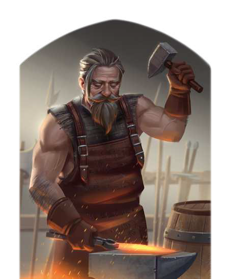

"Meine Zeit ist knapp und kostbar. Du erzählst mir also besser schnell, warum du ausgerechnet eine Klinge von meinem Amboss brauchst. Nur wenn du ein echter Held bist, der für die einfachen Menschen streitet, wirst du eine aus meiner Hand erhalten. Was? Nein, bin ich denn ein Krämer? Ich verkaufe keine Schwerter, die nicht eigens für den jeweiligen Träger gemacht sind. Scher dich weg, du Tor!"
Thorn Eisinger ist eine Legende, als Schmied und als Held der Schlacht um Gareth. Er ist das Gesicht des Rats der Helden, der Gareth regiert, und er ist es, der dem kaiserlichen Marschall Alrik vom Blautann Mal um Mal ein perfektes Schwert schmiedet, wenn dessen Klinge wieder einmal zerbrochen ist. Meister Eisinger erschafft Objekte von derart überragender Schmiedekunst, dass jeder Held eine solche Waffe sein eigen nennen will. Selbst zwergische Schmiede loben seinen Namen, und das will wirklich etwas heißen. Doch Meister Eisinger ist nicht einfach im Umgang, die Zeit im Rat der Helden hat den einstmals zupackenden und aufrechten Mann mürrisch und bärbeißig werden lassen. Zu viele Probleme musste er ungelöst lassen, sich zu oft der politischen Räson beugen. In seiner Schmiede ist sein Wort hingegen Gesetz. Hier kann er sich diejenigen aussuchen, die es wert sind, eine seiner Klingen zu führen - und genau das tut er auch. Sich in seinen Augen als würdig zu erweisen, kann durchaus ein ganz eigenes Abenteuer sein.
Volkes Stimme
- "Ohne Meister Eisinger wäre der Rat der Helden nichts. Und ohne Meister Eisinger wären auch viele Helden nichts. Ich bin eigentlich sicher, dass der Rat nach ihm benannt wurde."
- "Mürrisch und kompliziert. Nur wahrhaft würdige sollen seine Waffen tragen? Nein, mir hat der Herr Ratsherr natürlich kein Schwert verkaufen wollen!"